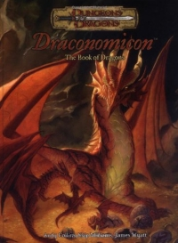

“Draconomicon” on the
Shelf of Many Books

Draconomicon: The Book of Dragons
D&D 3.5
(3e)
Year
: 2003 (November)
Draconomicon
on Amazon
Known monsters from the book:
Abyssal Drake
Air Drake
Ancient Blue Dracolich
Battle Dragon
Chaos Dragon
Desert Landwyrm
Dracolich
Draconic Creature
Draconic Fire Giant
Dragonbone Golem
Dragonkin
Dragonnel
Drakestone Golem
Earth Drake
Elemental Drake
Ethereal Dragon
Faerie Dragon
Fang Dragon
Fire Drake
Forest Landwyrm
Ghostly Adult Green Dragon
Ghostly Dragon
Golem
Half-Dragon
Hill Landwyrm
Hoard Scarab
Hoard Scarab Swarm
Howling Dragon
Ice Drake
Ironwyrm Golem
Jungle Landwyrm
Landwyrm
Magma Drake
Mountain Landwyrm
Oceanus Dragon
Ooze Drake
Plains Landwyrm
Planar Dragon
Pyroclastic Dragon
Radiant Dragon
Rust Dragon
Shadow Dragon
Skeletal Dragon
Skeletal Mature Adult Black Dragon
Smoke Drake
Spiked Felldrake
Squamous Spewer
Storm Drake
Styx Dragon
Swamp Landwyrm
Tarterian Dragon
Tundra Landwyrm
Underdark Landwyrm
Vampiric Dragon
Vampiric Mature Adult Red Dragon
Water Drake
Zombie Dragon
Zombie Young Adult Whitye Dragon